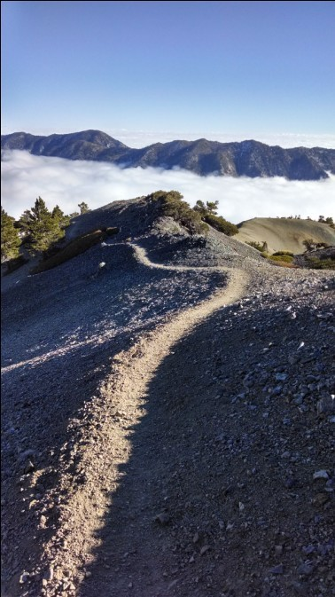

[转寄/推荐][转贴][删除][修改][设置可RE属性][上一篇][返回讨论区][下一篇][回文章][同主题列表][同主题阅读][从这里展开]
发信人: Mammut (长毛萌犸象), 信区: outdoor
标 题: 上几张南加的山的图
发信站: 饮水思源 (2013年11月18日18:08:57 星期一)
Old Baldy 洛杉矶周边比较经典的徒步路线 单日往返20公里 上升2千米 顶峰3千米海拔
路线比较简单直接 直上直下 可轻装 但是怕酷热（加州紫外线强）/冰雪风大（秋季，海拔略高） 还是带了过量的水和少量的冰雪装 后来事实证明天气给力 云层低 基本上是从阴雨走进云层再走在云上几百米
山脊，云上云下
 screen.width - 200){this.width = screen.width - 200}">
|

[转寄/推荐][转贴][删除][修改][设置可RE属性][上一篇][返回讨论区][下一篇][回文章][同主题列表][同主题阅读][从这里展开]